Руководство пользователя Руководство пользователя
Руководство пользователя Руководство пользователяВ данном руководстве будут описываться шаги по правильному циклу работ с тестами от самого начала до конца с помощью программ Mlab и MlabScanner. Общая последовательность действий следующая:
Чтобы открыть Конструктор сетов необходимо на главном окне Mlab нажать кнопку Сеты.

Откроектся окно конструктора. В окне можно задать условия для поиска уже созданных сетов. Это рекомендуется сделать перед тем как создавать новый.
Примечание: По умолчанию при открытии Конструктора сетов сеты созданные за последний месяц (около 30 дней).
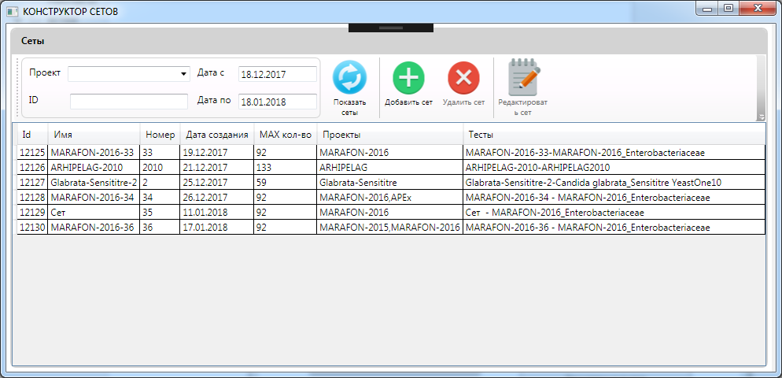
Для просмотра содержимого существующих тестов выберите его в строчке и появится таблица со списком штаммов в данном сете.
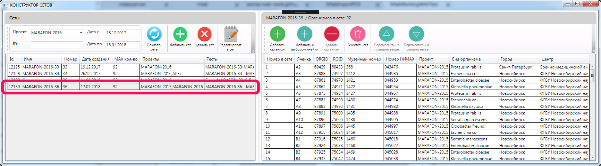
Допустим мы хотим создать новый сет в проекте MARAFON-2016. Для этого мы выбираем в выпадающем списке Проект MARAFON-2016 и нажимаем кнопку Показать сеты. Будьте готовы, что могут быть показаны сеты не только проекта MARAFON-2016, но и например MARAFON-2015, поскольку теперь сет может содержать в себе штаммы из нескольких проектов.

Это необходимо сделать, чтобы узнать, какой последний номер сета был в рамках данного проекта. Кроме того, имя нового сета, который мы создадим будет зависеть от выбранного значения в выпадающем списке Проект.
После того, как мы определились, какой номер будет иметь новый сет - можем нажать на кнопку Добавить сет

Появится окно добавления сета.

В нем уже заполнено поле Название сета и Дата создания. При желании содержимое этих полей можно изменить. Нам необходимо ввести Номер сета (пусть он будет, например 37) и Количество организмов (например 92). После этого необходимо выбрать проекты, в которых будет участвовать сет. Выбранные проекты, будут определять - штаммы из каких проектов можно будет добавить в новый сет. Например, если мы добавим проекты MARAFON-2015 и MARAFON-2016, то при добавлении организмов из рассева нам будут доступны как организмы, участвующие в проектах MARAFON-2016, так и организмы, участвующие в MARAFON-2015.
После заполнения всех полей окно будет выглядеть примерно так.

Нажимаем кнопку Сохранить и переходим к добавлению организмов в сет.
Примечание: Вы можете внести измения в сет с помощью кнопки Редактировать сет до тех пор, пока он не назначен какому-либо тесту.
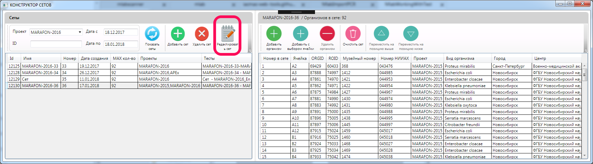
Для добавления организмов в сет нажмите кнопку Добавить организм. В появившемся окне будут показаны все штаммы из рассева, которые участвуют в проектах, которые вы указали при создании сета. Кликами мышкой с зажатыми клавишами Shift или Ctrl выберите необходимые штаммы, сколько выбрано будет показываться в нижней части окна. После завершения, нажмите Применить и они добавятся в сет. Позиции ячеек будут назначены автоматически, при желании их можно будет изменить с помощью кнопок.

Если какие либо штаммы были добавлены ошибочно, их можно удалить по одному с помощью кнопки Удалить организм. После удаления штаммы не назначаются на новые позиции, поэтому остаются пропуски. Чтобы это исправить - используйте кнопки Переместить на позицию вверх и Переместить на позицию вниз. Присутствует возможность полностью очистить сет, вернув его в первозданное состояние (кнопка Очистить сет).
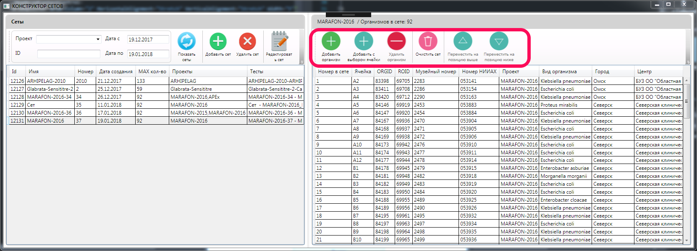
Примечание: Помните, что удалять штаммы из сета, очищать и удалять сет вовсе можно только в том случае, если сет еще не назначен какому-либо тесту. После удаления штаммов из сета, организмы автоматически попадают обратно в рассев.
После того, как все нужные штаммы добавлены в сет, можно переходить к созданию группы антибиотиков для данного сета.
Для работы с группами антибиотиков на стартовом окне Mlab нажмите кнопку Группы АБ. Здесь можно увидеть все группы, которые когда либо были созданы в системе.
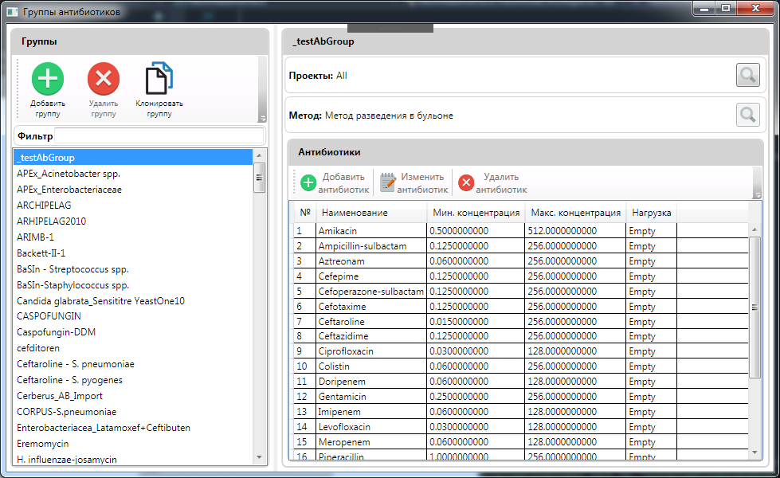
Для добавления новой нажмите кнопку Добавить группу.
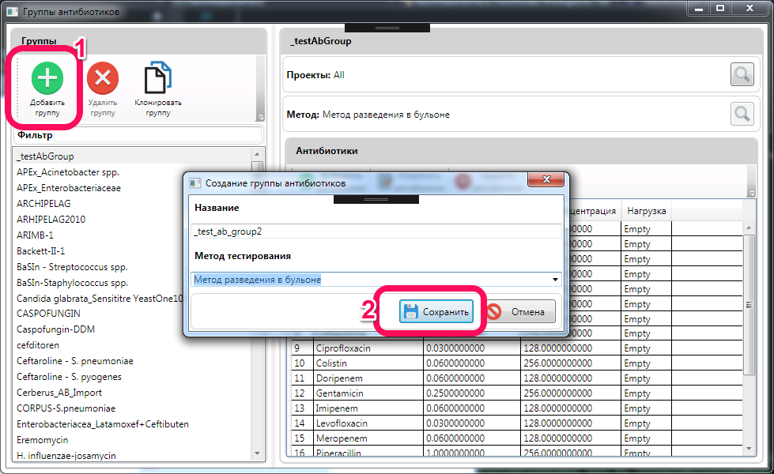
В появившемся окне введите название группы и метод тестирования. Обычно группа назвается по имени проекта в котором она используется и группе микроорганизмов к которой относится. После заполнения названия и метода тестирования нажмите кнопку Сохранить.
Если уже у вас уже есть группа, которая практически вам подходит и нуждается лишь в небольших исправлениях - нажмите кнопку Клонировать группу. Это позволит полностью скопировать существующую группу антибиотиков и изменить ее.
Для вновь созданной группы нужно установить проекты, в которых она будет участвовать. Это нужно, чтобы при создании тестов показывались только те группы, которые доступны для проектов теста.
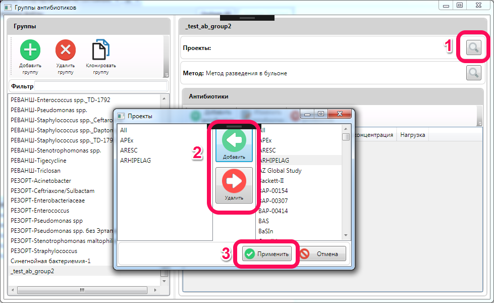
Примечание: Проекты, в которых участвует группа антибиотиков можно добавлять и для групп, которые уже назначены тестам и для антибиотиков из группы уже получены результаты.
Теперь нужно добавить антибиотики.
Примечание: Редактировать состав антибиотиков в группе можно только если для антибиотиков из этой группы еще нет результатов тестирования. Состав проектов, в которых может участвовать данная группа можно изменять в любой момент.
Нажимаем кнопку Добавить антибиотик и в появившемся окне выбираем антибиотик, выставляем минимальную и максимальную концентрацию. Это потребуется в дальнейшем для проверки валидности результатов.
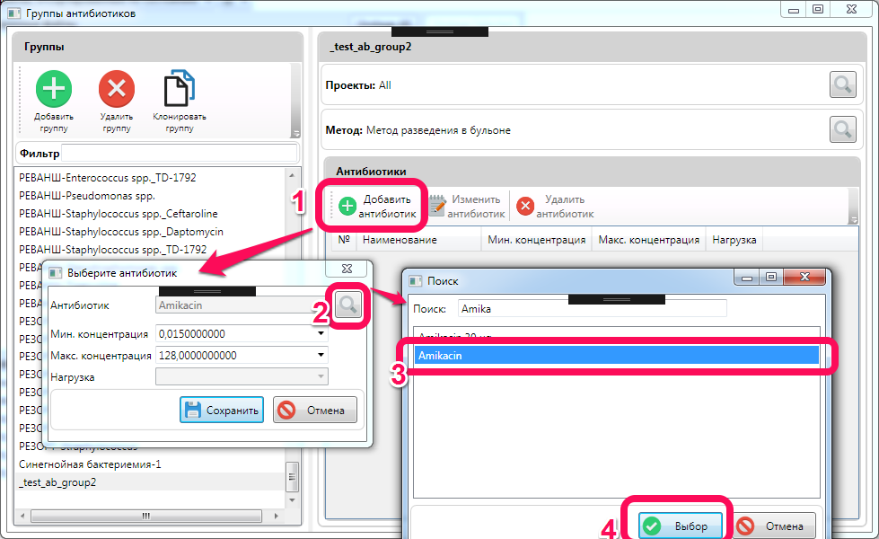
После того, как все антибиотики добавлены в группу, можно закрыть окно и перейти к созданию теста.
Чтобы открыть Конструктор тестов необходимо на главном окне Mlab нажать кнопку Тесты. Структура окна похожа на Конструктор сетов - в нем так же отображаются тесты за последний месяц и присутствует фильтр, благодаря которому можно искать интересующие вас тесты. При выборе теста из списка в правой части отображается подробная информация о нем.
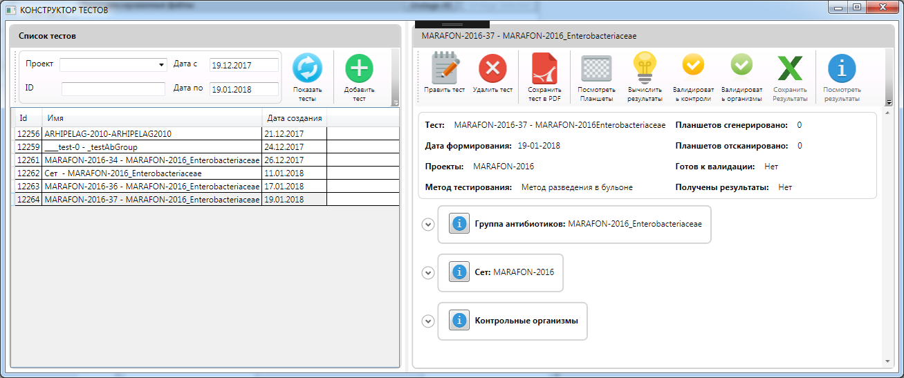
Примечание: Для понимания: Тест - это совокупость Сета, Группы Антибиотиков и Контрольных штаммов.
Чтобы создать новый тест - нажмите кнопку Добавить тест.
Прежде всего нужно задать, к каким проектам будет относится тест. Это определит набор сетов и групп антибиотиков, доступных для добавления. После этого выбираем Сет и Группу Антибиотиков. При необходимости можно добавить контрольные штаммы, но помните, что обязательно им нужно назначить ячейки, в которых они должны быть расположены.
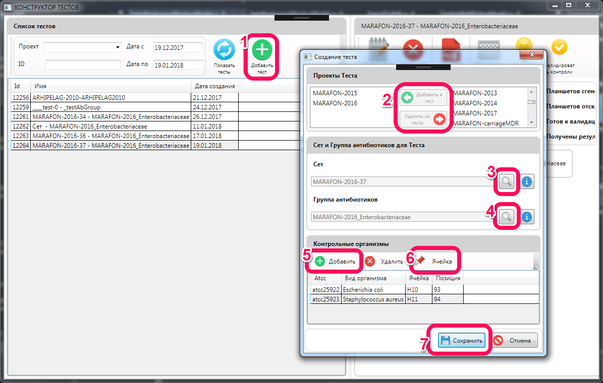
Для сохранения нового теста нажмите Сохранить.
После создания теста, в правой части экрана можно еще раз проверить - всё ли сделано правильно: все ли штаммы включены в тестирование для всех требуемых антибиотиков. При желании можно открыть показываемые таблицы и скопировать их в Excel.
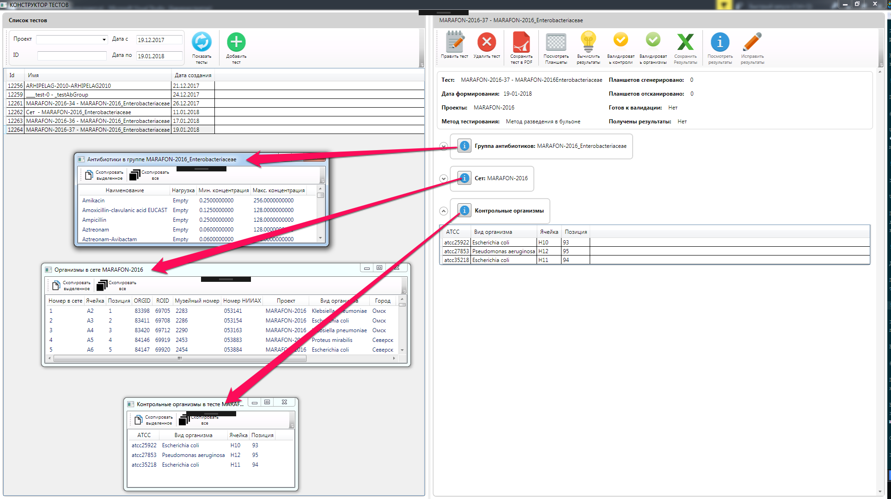
Примечание: Изменить или Удалить созданный тест можно только если для теста еще не сгенерированы планшеты и не получены результаты.
Если все сделано правильно, можно переходить к генерации планшетов.
После создания теста необходимо сгенерировать планшеты для тестирования и распечатать для них штрих коды. Для этого нажмем кнопку Посмотреть планшеты.
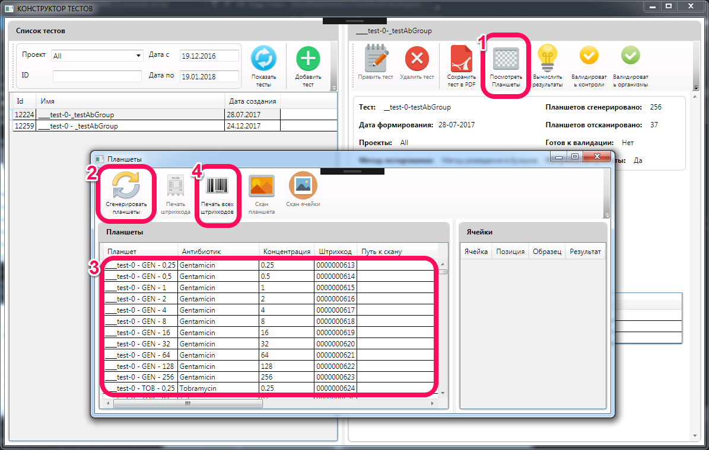
В открывшемся окне нажимаем кнопку Сгенерировать планшеты. Дожидаемся окончания процесса. После завершения таблицы заполнятся строками и все готово к печати. Проверьте, включен ли принтер Zebra GX430t и нажмите кнопку Печать всех штрих кодов. При необходимости можно распечатать и отдельный штрих код с помощью кнопки Печать штрихкода.
Сам штрих-код выглядит следующим образом:
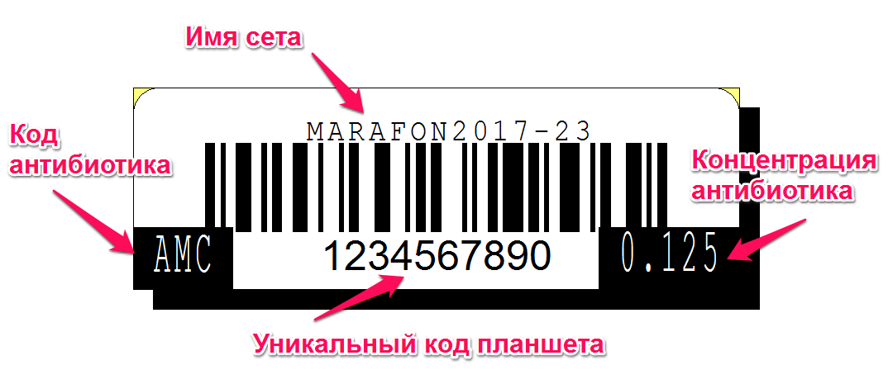
Его необходимо наклеить на торец планшета, противоположного ячейке А1 как показано на рисунке.
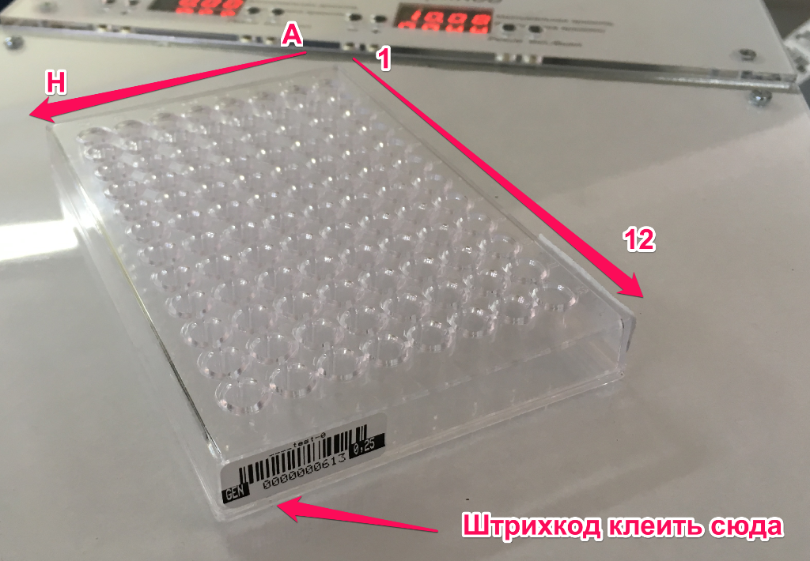
ВНИМАНИЕ! Включать прибор только с ОТКРЫТОЙ дверцей, иначе сканер не заработает! Потом дверцу можно закрыть!
Включаем прибор в розетку, проверяем - загорелись ли индикаторы, включаем подсветку на панели, открываем дверцу, подключаем оба USB-шнура к компьютеру. После этого запускаем программу MlabScanner. При запуске программа проверяет, подключен ли прибор и в случае, если ей не удается активировать камеру выдает сообщение об ошибке.
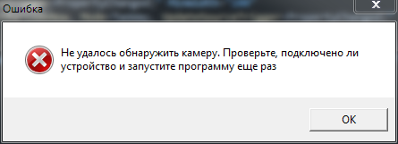
Программа запустится, но работать с ней нельзя. В этом случае нужно закрыть окно программы, еще раз проверить, включен ли прибор в розетку, подключены ли ОБА USB-шнура к компьютеру и уже после этого звонить кому-то.
Если все нашлось и программа запустилась - откроется такое окно и можно начинать сканирование.
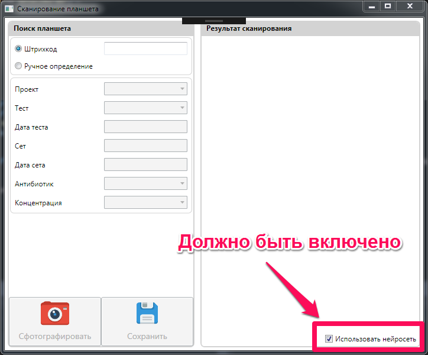
Примечание: Проверьте, что в правом нижнем угле отмечаен пункт Использовать нейросеть. В противном случае определение Есть рост/Нет роста работать не будет.
Сканирование возможно в автоматическом и ручном режиме. По умолчанию включен автоматический режим - сопоставление планшета с информацией в базе данных происходит посредством сканирования штрих-кода. Перед каждым сканированием просим убедиться, что курсор ввода стоит в поле Штрих-код.
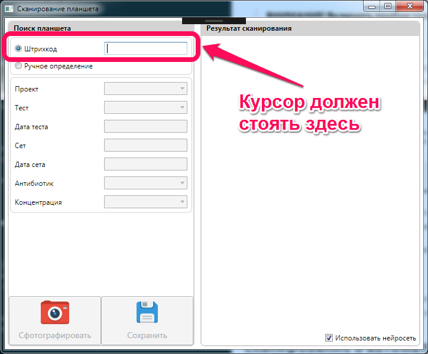
Устанавливаем планшет в прибор следующим образом:
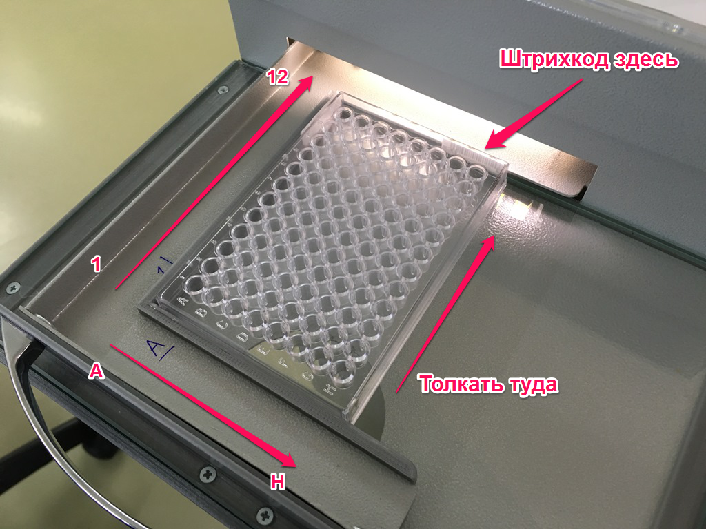
Задвигаем крышку до конца, когда штрих-код считается, раздастся писк, в поле штрих-код появится идентификатор планшета, поля автоматически заполнятся значениями из базы данных и если все определено правильно - планшет сфотографируется автоматически.
Примечание: Если по каким-либо причинам штрих-код не считался - вы можете ввести его вручную.
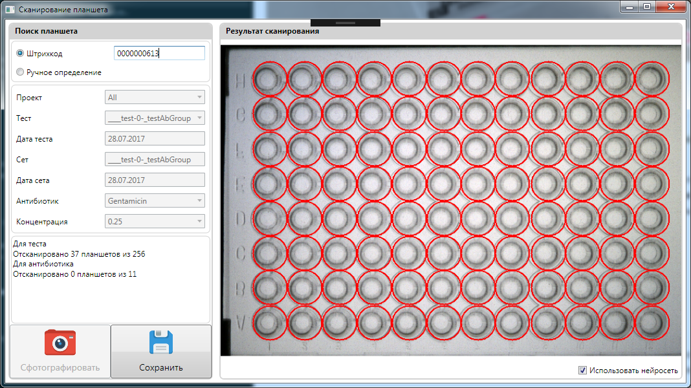
После этого должно появиться изображение планшета с цветными кругами - зеленый означает, что рост есть, красный - роста нет. В данном случае делать ничего не требуется, это сделано для контроля, что камера работает, подсветка включена, система работает. Если вы видите такую картинку, значит все прошло хорошо - нажмите кнопку Сохранить.
В ходе работы будет отображаться информация о том, сколько всего планшетов осталось отсканировать для теста и сколько для каждого антибиотика.
Если планшет уже сканировали, появится предупреждающее сообщение.
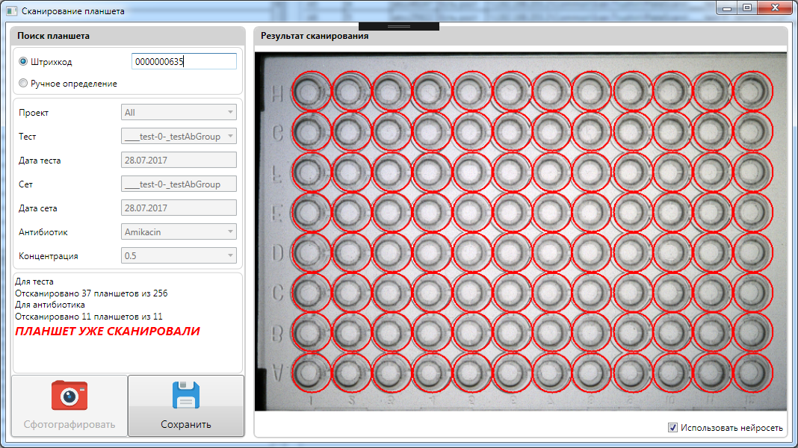
Оно ни к чему не обязывает, это еще один сигнал для проверки - действительно ли сканируемый планшет тот чем он является. Имейте в виду, что повторное сканирование перезапишет результаты предыдущего сканирования.
Не забывайте нажимать кнопку Сохранить чтобы записать результаты распознавания в базу!
Режим ручного сканирования предназначен для случаев, когда автоматически штрих-код не считывается или вовсе отсутствует.
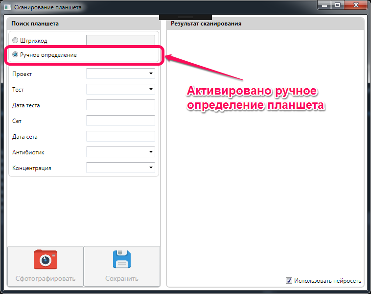
В этом случае вы последовательно выбираете из выпадающих списков необходимые пункты направляясь от проекта к концентрации сверху вниз. После установки концентрации обновится статусная информация и станет доступна кнопка Сфотографировать. Установите планшет в прибор и нажмите ее.
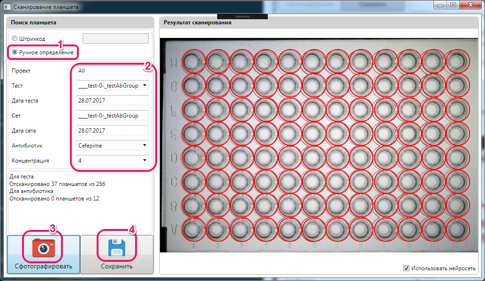
Не забывайте нажимать кнопку Сохранить чтобы записать результаты распознавания в базу!
После того, как все планшеты отсканированы - закрываем программу MlabScanner.
После того, как все планшеты отсканированы необходимо провалидировать полученные результаты. Данный процесс состоит из трех этапов:
Примечание: Вы можете посмотреть снимки каждого из планшетов нажав кнопку Посмотреть планшеты
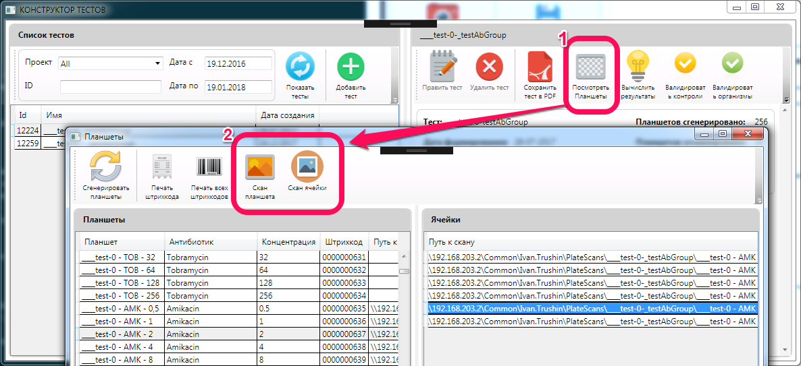
Для этого находим тест, подвергшийся сканированию в Конструкторе тестов. Если цифры в пунктах Планшетов сгенерировано и Планшетов отсканировано совпадает, а пункт Получены результаты установлен в значение Нет - значит сканирование завершено и вычисление МПК по сканам не производилось. Нажимаем кнопку Вычислить результаты.
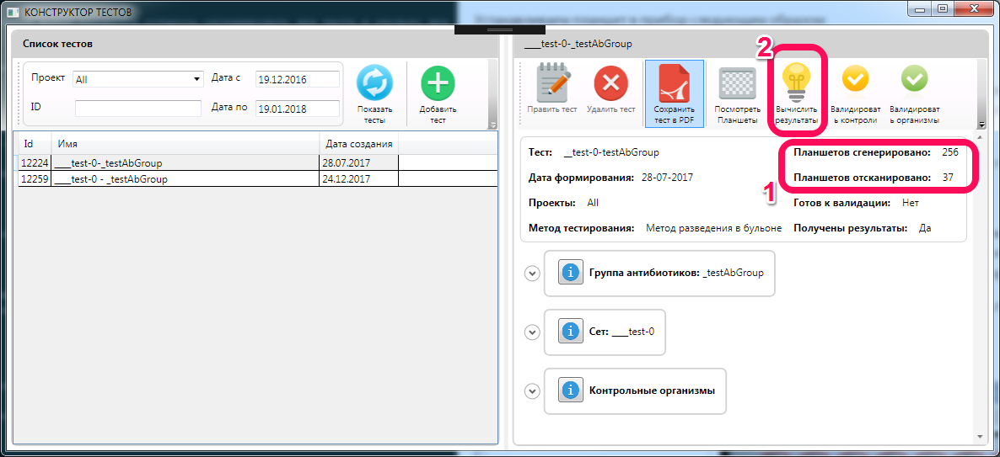
Дожидаемся окончания процесса. После завершения значения МПК получены, однако все они отмечены как неактивные и невалидные. Чтобы они зафиксировались как финальные и постоянные, необходимо пройти этапы валидации.
Валидацию результатов необходимо начинать с валидации контролей, так как ее результаты напрямую влияют на результаты.
Чтобы начать - нажмите кнопку Валидировать контроли.
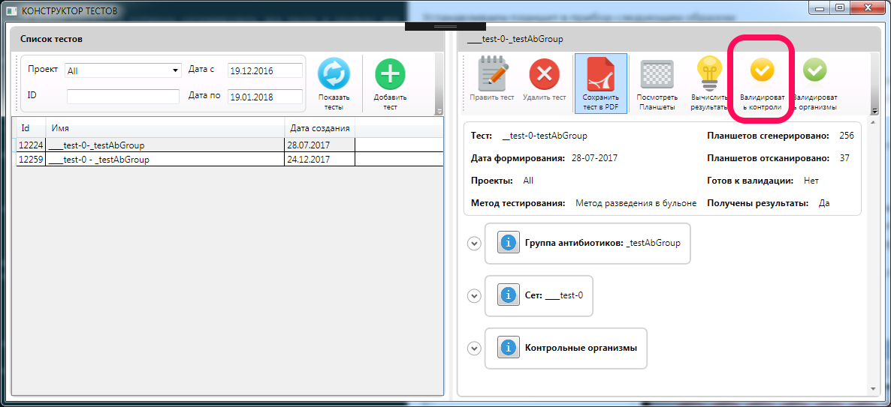
Появится окно Валидации планшетов контролей.
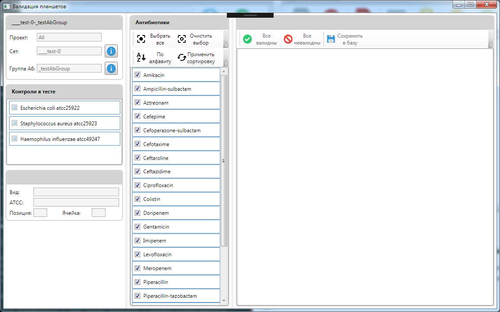
Вверху слева показана информация по тесту, в рамках которого производилось тестирование. Ниже - список всех контролей, участвовавших в тесте. По нажатии на один из них, справа появятся ячейки планшетов, соответствующие различным концентрациям антибиотиков. Если контроль нуждается в валидации (хотя бы один антибиотик непроверен - у него отсутствует галочка). Если у контроля стоит галочка - значит у него не осталось непроверенных антибиотиков.
Подробная информация о выбранном контроле и его позиция в планшете показывается ниже списка Контроли в тесте.
Примечание: Возможно загрузка изображений ячеек займет некоторое время - это зависит от количества антибиотиков.
Примечание: Вы можете определить порядок показа антибиотиков и даже скрыть некоторые с помощью панели фильтров антибиотиков. Элементы списка можно перетаскивать мышкой. Однако помните, что все равно нужно валидировать все результаты.
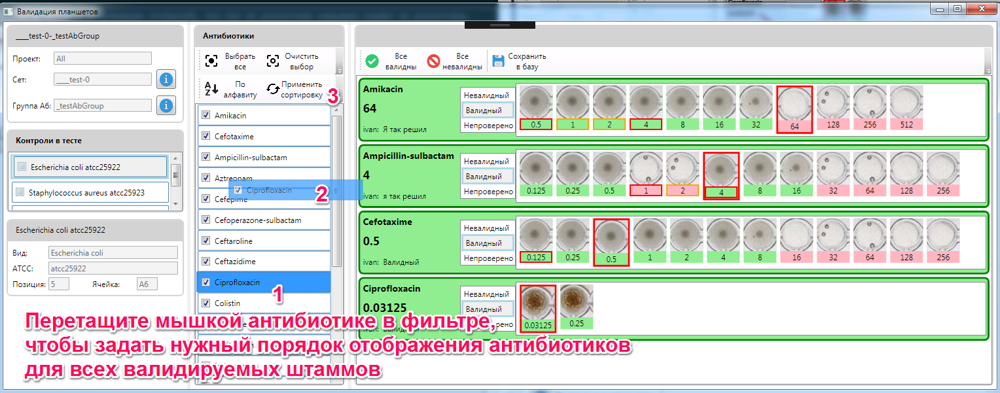
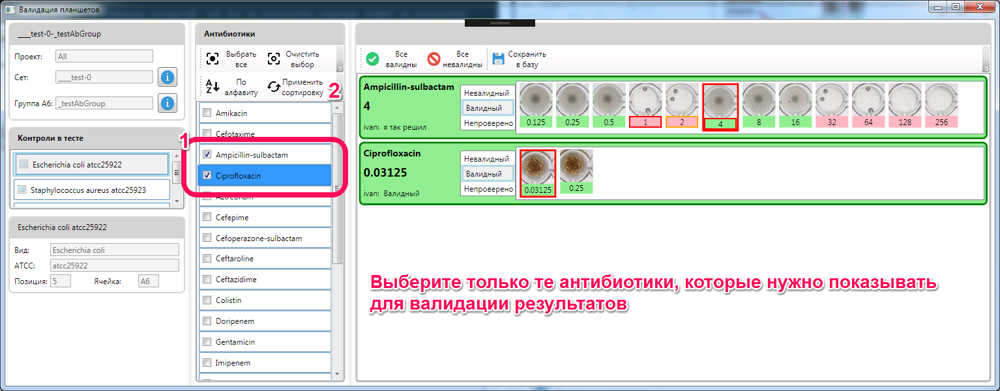
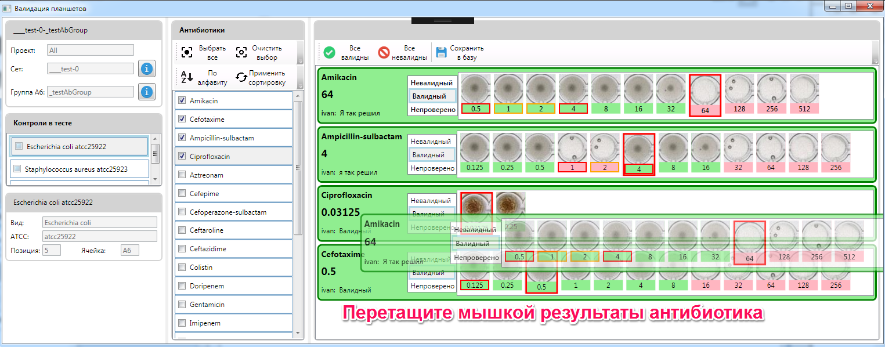
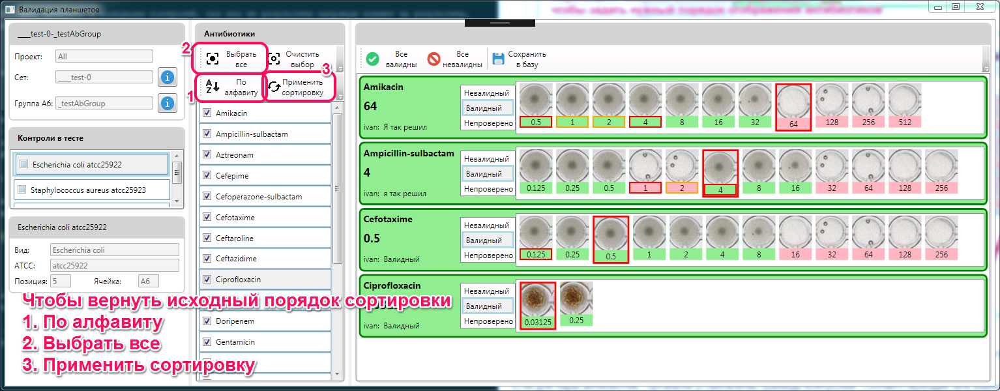
По умолчанию все строки серого цвета, что соответствует статусу Непроверено.
Под каждым антибиотиков написано вычисленное значение МПК, дополнительно ячейка с этим МПК обведена жирной красной рамкой.
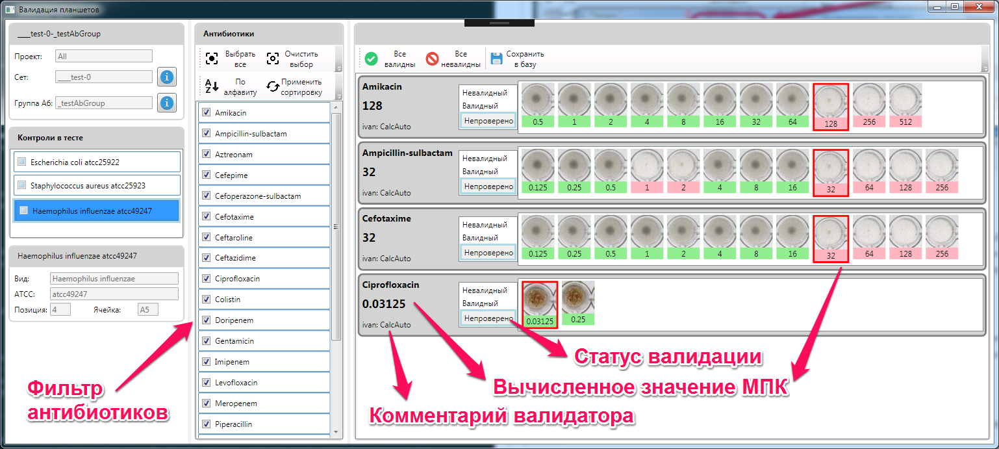
Если для пары антибиотик - организм установлены границы контролей - соответствующие мпк имеют оранжевую обводку для Target и красную обводку для Range. По умолчанию, если вычисленное МПК уходит за границы Range - результат помечается как невалидный.
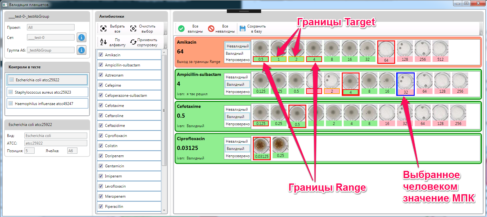
Задача валидатора - проверить, правильно ли сработала нейросеть и все МПК определены верно. Если же где то закралась ошибка, валидатор должен кликнуть на верное значение МПК (выбранная ячейка обведется синим) и во всплывающем по правому клику меню выбрать пункт Изменить МПК. Красная рамка должна переместиться на выбранную ячейку.
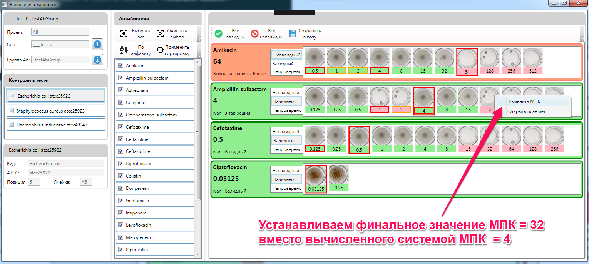
При желании валидатор может открыть полное изображение планшета, откуда была вырезана ячейка с помощью правого клика по ячейке и выбора пункта Открыть планшет.
После того, как все МПК были изменены, валидатор должен пометить каждый антибиотик Валидным или Невалидным, чтобы не осталось серых строк. Для этого для каждого антибиотика выбирается пункт из перечисления. Если необходимо пометить весь массив антибиотиков одним статусом - для этого служат кнопки в верхней части панели.
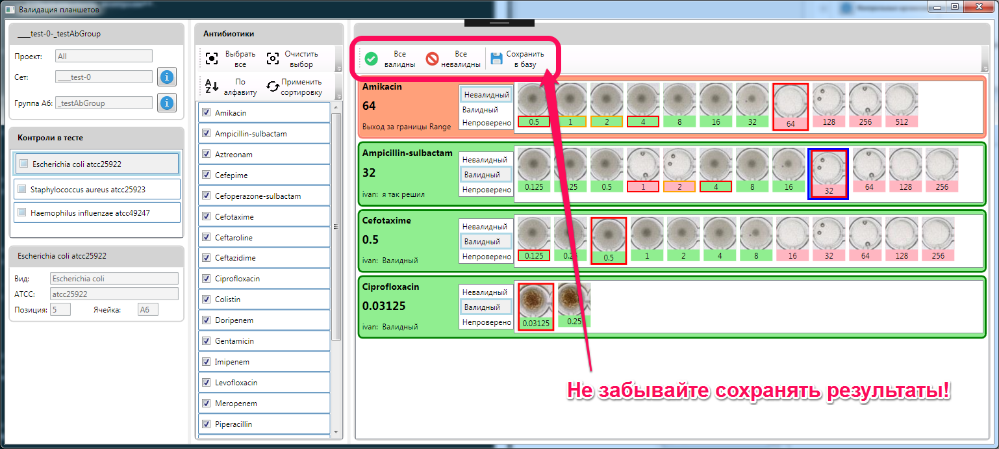
Примечание: Если вы помечаете результат невалидным, программа предложит вам ввести комментарий, почему вы так решили.
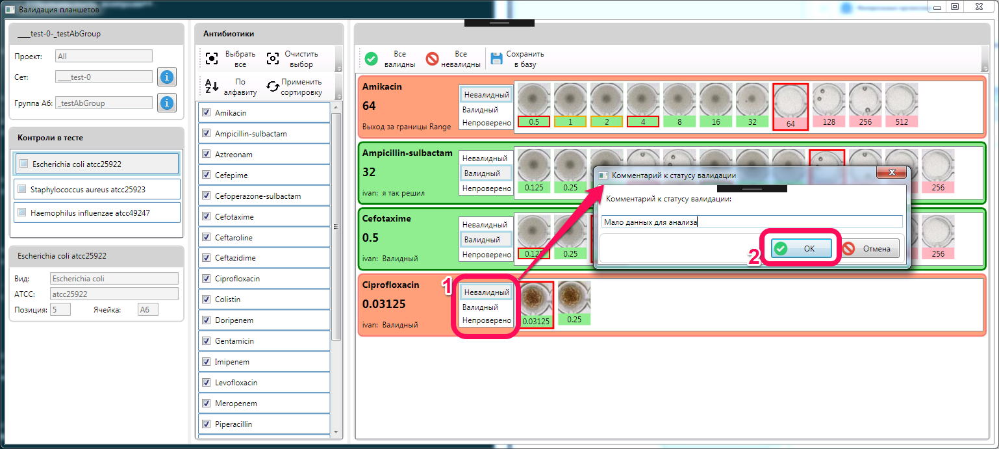Примечание: Если пометить контроль невалидным, автоматически невалидными помечаются и все результаты штаммов для данного антибиотика.
После того, как вы сделали все что хотели с выбранным контролем - нажмите кнопку Сохранить в базу, чтобы применить все сделанные вами изменения и перейти к следующему контролю.
Когда все контроли были просмотрены и провалидированы можно закрыть окно и переходить к валидации организмов.
Вкратце процесс - что нужно сделать показан ниже:

Чтобы начать - для выбранного теста нажмите кнопку Валидировать организмы.

В целом процесс валидации совпадает с тем, что происходило в валидации контролей.
Разница состоит в том, что в начале не все результаты будут серы - некоторые могут быть красными - они помечены невалидными вследствие невалидного результата контроля, о чем будет отображаться соответствующий комментарий.
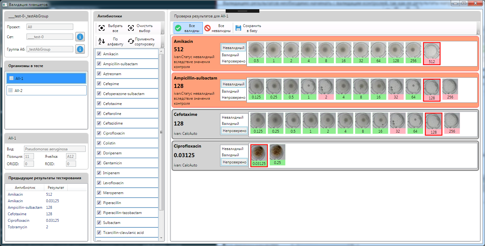
Примечание: в подробной информации о штамме вы также можете видеть его ORGID и ROID, а еще ниже - предыдущие результаты тестирования данного штамма антибиотиками. Кроме того, если вы определяете результаты невалидными, это никак не влияет на статус валидности результатов контролей.
В остальном последовательность действий и логика процесса полностью совпадает с валидацией контролей.
Для повторения посмотрим еще одну анимацию.

Чтобы увидеть результаты теста после валидации существует три кнопки:
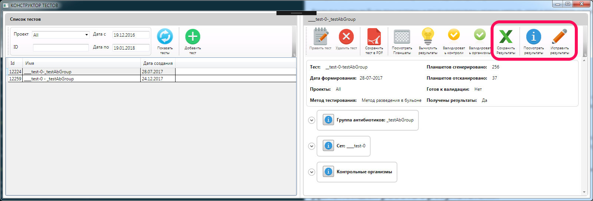

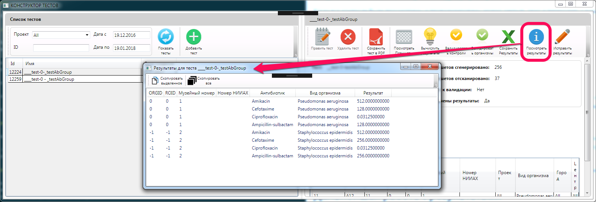
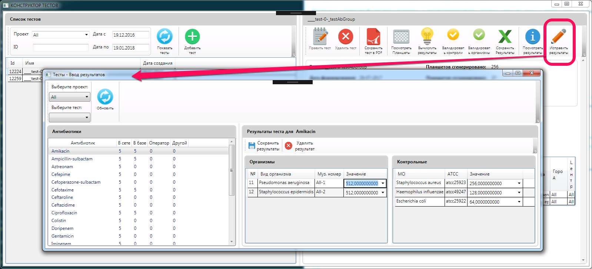
-руководство-пользователя){kind=link}